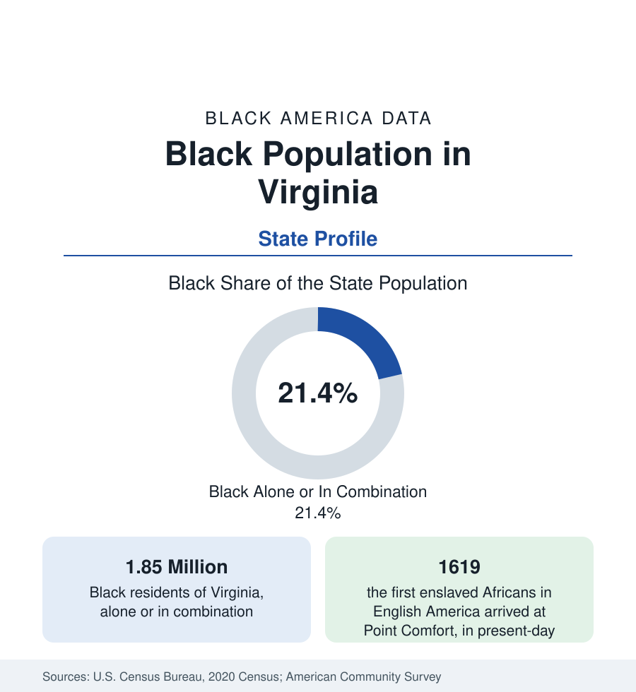

Black Census
Black Population in Virginia: Where American Slavery Began
About 1.85 million Black Virginians — one in five residents — in the state where the first enslaved Africans arrived in 1619 and where Richmond was slavery's industrial capital.

Virginia holds about 1.85 million Black residents — Black alone or in combination — about one in five of its people, with Black alone at about 1.6 million, or 19 percent. No state frames Black America's arc more completely: the first enslaved Africans in English America arrived at Point Comfort, in present-day Hampton, in 1619; Richmond became the domestic slave trade's second city and the capital of the Confederacy; and the modern commonwealth holds a Black population that is simultaneously rural-rooted in the Southside tobacco country, urban in Richmond and Hampton Roads, and suburban in the counties outside Washington. This article profiles the population in the census data.
Hampton Roads: The Oldest Black Geography
The Hampton Roads region — Norfolk, Hampton, Newport News, Portsmouth, Virginia Beach, and their neighbors — holds the state's largest Black concentration and its oldest. Hampton, where the first Africans arrived and where contraband camps of the Civil War sheltered thousands of self-emancipated people, is about half Black; Portsmouth is a majority-Black city; Norfolk, the great naval port, is more than two-fifths Black; and Newport News, built on shipbuilding, stands near two-fifths as well. The region's Black population was built on maritime and federal employment — the Navy economy that made Hampton Roads a Black professional and working-class center — anchored by Hampton University and Norfolk State, two of the nation's prominent HBCUs.
Richmond and the Southside
Richmond, the capital, is more than two-fifths Black, a city whose Black history runs from Gabriel's planned rebellion and the slave markets of Shockoe Bottom to the Jackson Ward district — once called the Harlem of the South, a center of Black banking and business that included Maggie Walker's founding of the first chartered bank by a woman of any race in the nation. Virginia Union University anchors its Black education. South and west of the city, the Southside counties — the tobacco belt where enslaved labor was densest — retain Black shares at or above the state figure, with Petersburg, an old free-Black and industrial city, majority Black, and Virginia State University, the state's public land-grant HBCU, in its suburbs.
Northern Virginia: The Newest Layer
The state's fastest-growing Black population is its newest: the Washington suburbs. Prince William County holds one of the largest Black suburban populations in the region — well above 100,000 and growing with the county's overall boom — and Fairfax, Loudoun, Stafford, and Spotsylvania counties record Black populations that are small in share but large and rising in count. These are, in the survey data, among the most affluent and educated Black suburban populations in the United States, drawn by the federal economy that the Washington profile documents. The contrast with the Southside — two hours south, where counties record the state's hardest indicators — is the sharpest intra-state divide in this series east of the Mississippi.
Composition and Change
Virginia's Black share edges slowly downward in the estimates as the state grows faster overall — through Northern Virginia's international in-migration and the coastal economies — while the Black count climbs steadily. The population is institutionally dense: five HBCUs, a large Black public-sector workforce on the Washington pattern, and one of the oldest continuous Black landholding traditions in the rural counties. Its age structure and attainment sit near national Black averages, pulled in opposite directions by its two demographic poles — the affluent federal suburbs and the rural Southside — a division the county tables are designed to keep visible.
Reading the Virginia Numbers
One further layer belongs in the state account: Virginia's Black population includes one of the nation's larger African immigrant communities in its northern counties — Ethiopian, Ghanaian, and Nigerian communities concentrated around Alexandria, Arlington, and Prince William — alongside growing Caribbean settlement in Hampton Roads and Richmond, so that the commonwealth's oldest Black population is now joined, measurably, by its newest.
Virginia's profile closes the Atlantic South sequence of this section. Its argument is historical depth matched with modern divergence: the state where American slavery began now holds Black populations at both the prosperous, federal-suburban extreme of the national distribution and its rural, disinvested floor. A state average that blends Hampton, Jackson Ward, Prince William County, and the Southside tobacco counties describes none of them — the county profiles beneath this account carry the true picture, jurisdiction by jurisdiction.
More in Black Census
The Black Population of the United States: Size, Definitions, and Distribution
The Black population of the United States totals 52.8 million — 15.4 percent of the nation. How the Census Bureau defines and counts the population, and where it lives.
Black Median Household Income in the United States
Black median household income stands at $56,490 in the Census Bureau's annual income report — how the figure is measured, how it compares, and what drives it.
The Black Poverty Rate: Levels, Children, and the Long Trend
The official Black poverty rate is 17.1 percent — against 11.1 percent nationally and 7.7 percent for non-Hispanic White Americans. How poverty is measured and what the data show.
Source: U.S. Census Bureau, 2020 Census; American Community Survey; Population Estimates Program.